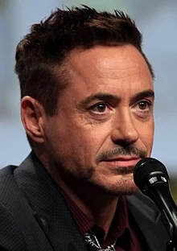
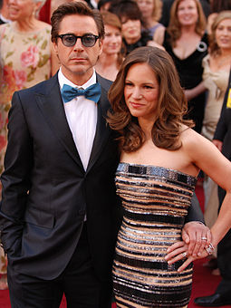

From Wikipedia, the free encyclopedia
Robert Downey Jr. |
|
|  | |
| Born | Robert John Downey Jr. April 4, 1965 (age 53) New York City, New York, U.S. |
| Residence | Malibu, California , U.S.[1] |
| Education | Santa Monica High School |
| Occupation | Actor singer-songwriter |
| Years active | 1970–present |
| Net worth | $260 million |
| Spouse(s) | Deborah Falconer (m. 1992; div. 2004) Susan Levin (married. 2005) |
| Partner(s) | Sarah Jessica Parker (1984–1991) |
| Children | 3 |
| Parent(s) | Robert Downey Sr. |
Robert John Downey Jr. (born April 4, 1965) [2] is an American actor and singer. His career has included critical and popular success in his youth, followed by a period of substance abuse and legal difficulties, and a resurgence of commercial success in middle age. For three consecutive years from 2012 to 2015, Downey topped the Forbes list of Hollywood's highest-paid actors, making an estimated $80 million in earnings between June 2014 and June 2015.[3][4]
Making his acting debut at the age of five, appearing in his father's film Pound (1970), Downey appeared in roles associated with the Brat Pack, such as the teen sci-fi comedy Weird Science (1985) and the drama Less Than Zero (1987). He starred as the title character in the 1992 film Chaplin, for which he earned a nomination for the Academy Award for Best Actor and he won the BAFTA Award for Best Actor in a Leading Role. After being released in 2000 from the California Substance Abuse Treatment Facility and State Prison where he was incarcerated on drug charges, Downey joined the cast of the TV series Ally McBeal playing Calista Flockhart's love interest. For that he earned a Golden Globe Award. His character was terminated when Downey was fired after two drug arrests in late 2000 and early 2001. After his last stay in a court-ordered drug treatment program, Downey achieved sobriety.
Downey's career prospects improved when he featured in the black comedy crime Kiss Kiss Bang Bang (2005), the mystery thriller Zodiac (2007), and the satirical action comedy Tropic Thunder (2008); for the latter he was nominated for an Academy Award for Best Supporting Actor. Beginning in 2008, Downey began portraying the role of Marvel Comics superhero Iron Man in the Marvel Cinematic Universe, appearing in several films as either the lead role, member of an ensemble cast, or in a cameo. Each of these films, with the exception of The Incredible Hulk, has grossed over $500 million at the box office worldwide; four of these— The Avengers, Avengers: Age of Ultron, Iron Man 3 andCaptain America: Civil War—earned over $1 billion, while Avengers: Infinity War earned over $2 billion.
Downey has also played the title character in Guy Ritchie's Sherlock Holmes (2009), which earned him his second Golden Globe win, and its sequel (2011), both of which have earned over $500 million at the box office worldwide.
As of 2018, the U.S. domestic box-office grosses of Downey's films total over US $4.9 billion, with worldwide grosses surpassing $11.6 billion, making Downey the third highest-grossing U.S. domestic box-office star of all time.[5]
Contents[hide]|  |
| Downey and his wife Susan at the 2010 Academy Awards |
Downey started dating actress Sarah Jessica Parker after meeting her on the set of Firstborn. The couple later separated due to his drug addiction.[118]
He married actress/singer Deborah Falconer on May 29, 1992, after a 42-day courtship.[119] Their son, Indio Falconer Downey, was born in September 1993.[120] The strain on their marriage from Downey's repeated trips to rehab and jail finally reached a breaking point; in 2001, in the midst of Downey's last arrest and sentencing to an extended stay in rehab, Falconer left Downey and took their son with her.[118] Downey and Falconer finalized their divorce on April 26, 2004.
In 2003, Downey met producer Susan Levin, an Executive Vice President of Production at Joel Silver's film company, Silver Pictures on the set of Gothika.[64]sup Downey and Susan quietly struck up a romance during production, though Susan turned down his romantic advances twice.[121] Despite Susan's worries that the romance would not last after the completion of shooting because "he's an actor; I have a real job",[121] the couple's relationship continued after production wrapped on Gothika, and Downey proposed to Susan on the night before her thirtieth birthday.[121] The couple were married in August 2005, in a Jewish ceremony at Amagansett, New York.[122][123] A tattoo on one of his biceps reads "Suzie Q" in tribute to her.[124] Their first child, a son, was born in February 2012,[125] their second child, a daughter, was born in November 2014.[126][127][128]
Downey has been a close friend of Mel Gibson since they starred in Air America. Downey defended Gibson during the controversy surrounding The Passion of the Christ, and said "nobody's perfect" in reference to Gibson's DUI.[129] Gibson said of Downey: "He was one of the first people to call and offer the hand of friendship. He just said, 'Hey, welcome to the club. Let's go see what we can do to work on ourselves.'"[130] In October 2011, Downey was being honored at the 25th American Cinematheque Awards; Downey chose Gibson to present him with his award for his life's work, and used his air time to say a few kind words about Gibson and explain why he chose him to present the award.[131]